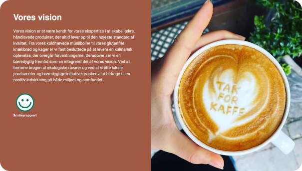
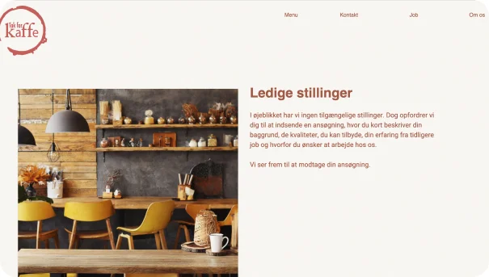
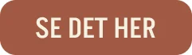

04
Grundlæggende indhold - virksomhedssite

I grundlæggende indhold fik vi stillet opgaven at lave et virksomheds-site hvor vi skulle re-designe en nuværende hjemmeside.

Min gruppe valgte kaffebaren “tak for kaffe” og lavede en analyse af nuværende hjemmeside samt brugerprofil for herefter at kunne udforme moodboards og styletile.
Grundlæggende indhold
Vi benyttede også BERT-test til at konkretisere opfattelsen af vores re-desing.
I dette projekt havde vi også stort fokus på kontakt mellem kunde og os, for at få en bredere forståelse af hvad fremtidige samarbejder kan indebærer.
